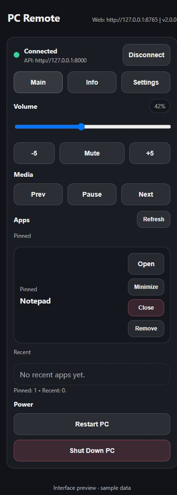

Your phone.
Your PC.
One remote.
Control volume, media and apps from your phone browser. Windows and macOS. Just scan the QR code.

1
Download
Get PC Remote for Windows or macOS.
2
Scan
Open the pairing QR code from the app menu and scan it with your phone.
3
Control
Adjust volume, control media and launch apps from your phone browser.